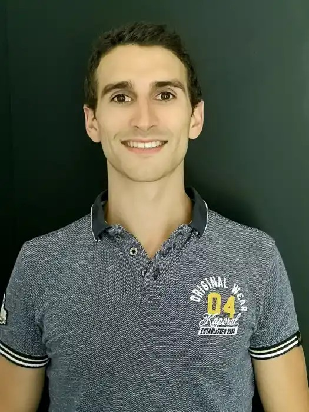
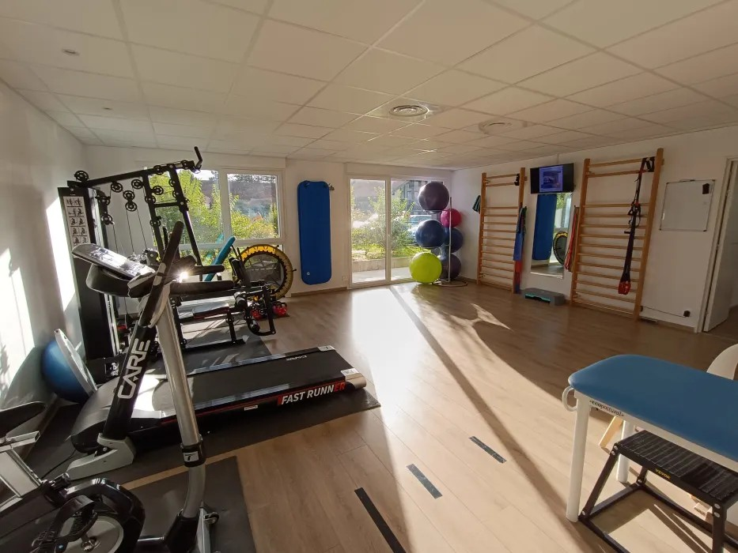
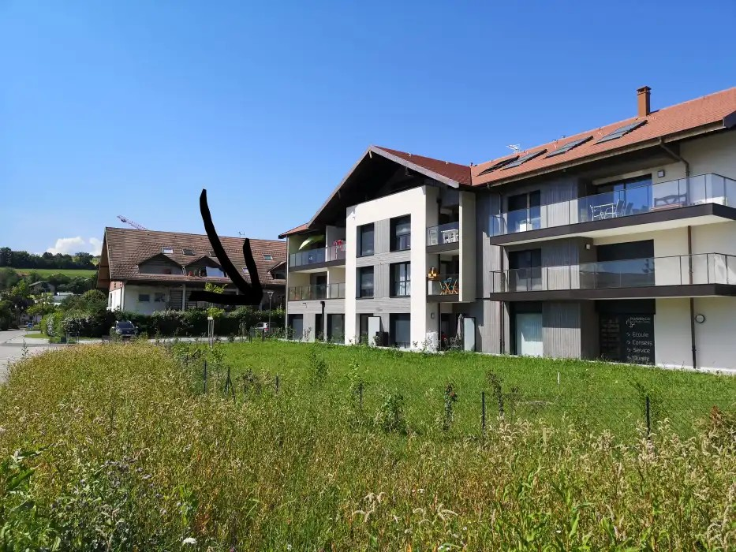
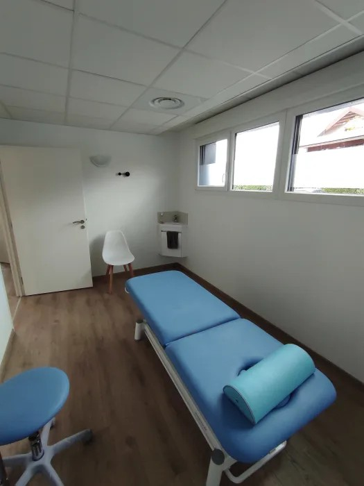

Sylvain RIC | Alpes Kiné Mouv'
Cabinet Alpes Kiné Mouv' à Epagny Metz-Tessy. Prise en charge globale, active et personnalisée des affections du rachis (dos, lombaires, cervicales), pathologies de l'épaule et kinésithérapie du sport. Consultations au cabinet et à domicile.

Prise en charge ciblée et fondée sur les preuves : lombalgies, cervicalgies, sciatiques, cruralgies, hernies discales et douleurs de la colonne vertébrale. Diagnostic différentiel, évaluation selon la méthode McKenzie et bilan neurodynamique approfondi pour un soulagement et une autonomisation durables.
Expertise dans le traitement des tendinopathies, lésions de la coiffe des rotateurs, conflits sous-acromiaux, instabilités, capsulites et suivi post-opératoire. Objectif : restaurer la mobilité et la force fonctionnelle.
Accompagnement personnalisé des sportifs (amateurs à confirmés) : prévention des récidives, traitement des lésions myo-aponévrotiques/entorses et protocoles de réathlétisation sur le terrain.
Chaque patient bénéficie d'une évaluation initiale individualisée afin de déterminer précisément l'origine des symptômes. La rééducation privilégie le mouvement guidé, l'éducation thérapeutique et des programmes d'exercices progressifs pour vous redonner pleine autonomie.



Adresse :
40 rue de la Grenette
74370 Epagny Metz-Tessy (Proche Annecy)
Modalités :
Soins au cabinet (salles individuelles & plateau technique) et consultations à domicile sur le bassin annécien.
Afin d'assurer la meilleure fluidité dans la gestion du planning, la prise de rendez-vous s'effectue directement en ligne sur Doctolib.
Téléphone : 04 50 11 68 60
Accéder à l'agenda Doctolib